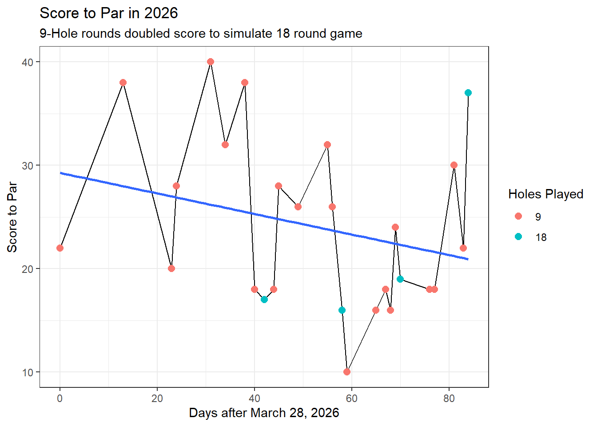

Code
problem <- golfdf %>%
mutate(Long_Shots = Score - Putts - Chips - Sand) %>%
select(Long_Shots) %>%
filter(Long_Shots < 1)
datatable(problem)One of the things that I noticed with my data when I did my previous analysis is the fact that I recorded some of my chip data wrong.
I figured this out because of some simple logic. If I want to find out how many “long” strokes I played (not chips, sand shots, or putts), then I can do my round score minus round chips minus round putts minus round sand shots.
If I actually do this in the code, I come up with either 0 or negative results.
problem <- golfdf %>%
mutate(Long_Shots = Score - Putts - Chips - Sand) %>%
select(Long_Shots) %>%
filter(Long_Shots < 1)
datatable(problem)You can see them here. I have 7 holes that I can prove I’ve indexed my strokes wrong. When I saw this, I remembered that I used to double count my chips and sand shots. What I mean by that is that if I took 1 sand shot on a hole, and 1 chip from the grass, I’d input 1 for my sand shots, and 2 for my chips, as I counted the sand shots as a chip.
I also previously counted any wedge shot as a chip shot, when in reality they were not.
These errors are likely the source of these data issues.
First, I isolate the rows that “flag” for having long shots be less than 1.
flagdf <- golfdf %>%
mutate(
Long_Shots = Score - Putts - Chips - Sand,
flag = ifelse(Long_Shots < 1, 1, 0)
) %>%
filter(flag == 1)
datatable(flagdf)Now that I have dates, course, and hole, I can find out where the issue is.
For the first, fifth, sixth, and seventh rows, the issue is that I count my tee shot as a chip.
For the second row, the issue is incorrect data entry. I only took 1 putt.
For the third and fourth rows, the issue is double counting sand shots as chips.
Now that we’ve identified those issues, we can address each one specifically. To do this, I’m going to create “flag” issues for each type of problem that I’m encountering, and then edit the column values off of that.
specificflags <- golfdf %>%
mutate(
Long_Shots = Score - Putts - Chips - Sand,
flag = ifelse(Long_Shots < 1, 1, 0),
wrong_tee = ifelse(flag == 1 & Date %in% c(mdy("3/28/2026"), mdy("5/9/2026"), mdy("5/12/2026"), mdy("5/16/2026")), 1, 0),
bad_entry = ifelse(flag == 1 & Date == mdy("4/20/2026"), 1, 0),
double_count = ifelse(flag == 1 & Date == mdy("5/1/2026"), 1, 0)
)
specificflags_show <- specificflags %>%
filter(flag == 1)
datatable(specificflags_show)Now that I’ve created the flags for the specific data issues, I can solve them with another mutate.
fixed_golf <- specificflags %>%
mutate(
Chips = ifelse(wrong_tee == 1, Chips - 1, Chips),
Putts = ifelse(bad_entry == 1, Putts - 2, Putts),
Chips = ifelse(double_count == 1, Chips - Sand, Chips),
Long_Shots = Score - Putts - Chips - Sand
)
fixed_show <- fixed_golf %>%
filter(flag == 1)
datatable(fixed_show)Now we can see that they’re all fixed. I have some suspicions that the “chips” number on the second and fourth rows are still problematic because of how I used to count wedge shots as chips, but I have no way to prove that, so I’ll keep them in.
One of the things that I didn’t do last time was use a statistical model on my scores over time. I’d like to do that this time around.
gdf1 <- fixed_golf %>%
group_by(Date, Course) %>%
summarise(
total_score = sum(Score),
total_par = sum(Par),
num_holes = n()
) %>%
mutate(
to_par = total_score - total_par,
simulated_to_par = if_else(num_holes == 9, to_par * 2, to_par),
simulated_score = if_else(num_holes == 9, total_score * 2, total_score),
days_since = as.integer(Date - lubridate::ymd("2026-03-28"))
) %>%
arrange(Date)I use the same code as before to group my hole scores into rounds, make a simulated par score (doubling the 9 hole to par score), and then graph it.
ggplot(gdf1, aes(x = days_since, y = simulated_to_par)) +
geom_line() +
geom_point(aes(color = as.factor(num_holes)), size = 2.5) +
geom_smooth(method = "lm", se = F) +
labs(
title = "Score to Par in 2026",
subtitle = "9-Hole rounds doubled score to simulate 18 round game",
y = "Score to Par",
x = "Days after March 28, 2026",
color = "Holes Played"
) +
theme_bw()
This graph features the actual linear model on it. It seems that by using a simple linear regression, we can very gingerly say I’m getting better at golf. These results aren’t significant though, as we can see by getting a summary of our regression.
scorelm <- lm(simulated_to_par ~ days_since, data = gdf1)
pander(scorelm)| Estimate | Std. Error | t value | Pr(>|t|) | |
|---|---|---|---|---|
| (Intercept) | 29.28 | 4.06 | 7.212 | 1.878e-07 |
| days_since | -0.09938 | 0.07195 | -1.381 | 0.1799 |
We don’t care about our intercept so much as we care about the “days_since”, or the date p-values. We have a P-value of 1.799, which is not statistically significant (I was looking for <0.05).
This means that although my scores are trending down by about 0.09 less strokes per day, there’s no concrete proof behind it. On top of that, this model only has an R^2 value of 0.07, which means it can only explain a tiny amount of the variance in my scores.